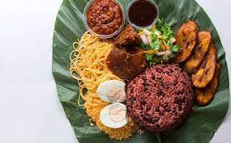

Waakye is a traditional Ghanaian dish celebrated for its unique flavors and distinctive appearance. The star of this dish is the waakye grains, which are made from millet and sorghum leaves. These leaves give the grains their characteristic dark brown color and a slightly tangy taste. The preparation of waakye involves boiling these grains with dried millet leaves and other traditional ingredients like millet husks, giving the dish its earthy flavor. Additionally, the use of black-eyed peas adds protein to the dish. Waakye is often served with an array of accompaniments, including a spicy pepper sauce, fried plantains, boiled eggs, and a leafy green called "kontomire," all contributing to a delightful symphony of flavors and textures on the plate.
One of the distinctive features of waakye is its presentation. The dark brown waakye grains are typically served on a bed of banana or plantain leaves, enhancing the overall aesthetic appeal of the dish. This popular Ghanaian cuisine not only offers a delicious and hearty meal but also reflects the rich cultural diversity and culinary creativity present in the country's food traditions. Waakye is a cherished part of Ghanaian culinary heritage, enjoyed by locals and appreciated by those who seek an authentic taste of West African cuisine.